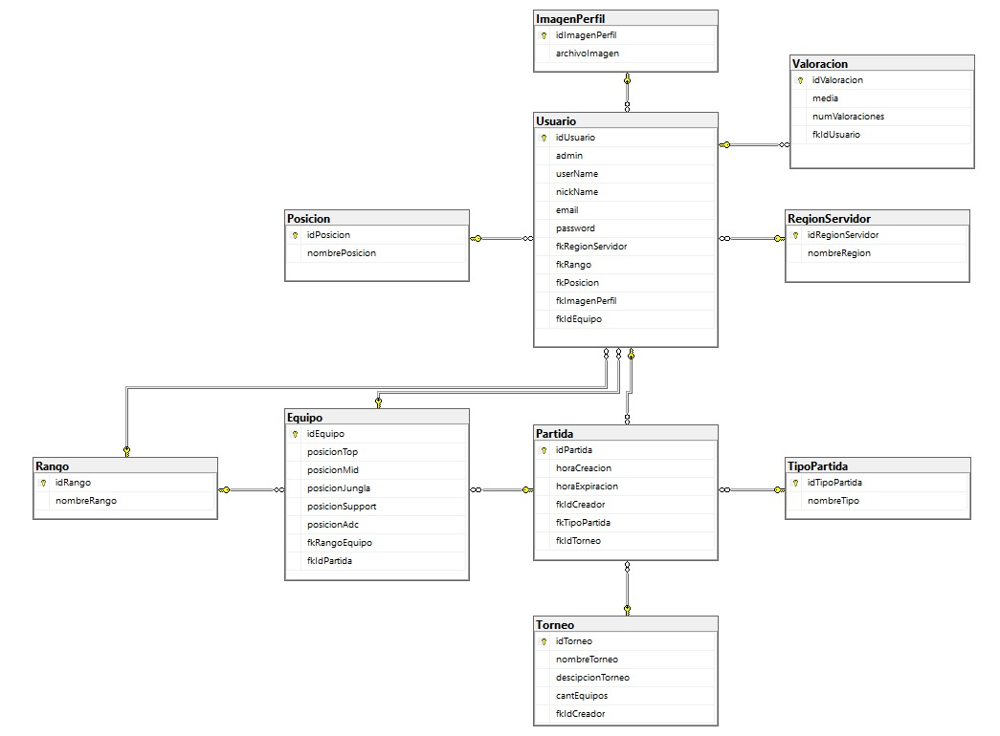

DB
Diseño de la Base de Datos

Script Base de Datos
Este script crea las tablas de la primera verisión de la Base de Datos SummonerMatch: - Equipo - ImagenPerfil - Partida - Posicion - Rango - RegionServidor - TipoPartida - Torneo - Usuario - Valoracion
Click para mostrar/ocultar el contenido
Listing 1: Database Creation Script
/*
Database Creation Script
This script creates tables for the SummonerMatch database, including:
- Equipo
- ImagenPerfil
- Partida
- Posicion
- Rango
- RegionServidor
- TipoPartida
- Torneo
- Usuario
- Valoracion
Please note that this script assumes the existence of other referenced tables.
Make sure to review and modify the script as needed for your specific database environment.
*/
/* SQL Script Content Goes Here */
USE [SummonerMatch]
GO
/****** Object: Table [dbo].[Equipo] Script Date: 05/12/2023 17:53:05 ******/
SET ANSI_NULLS ON
GO
SET QUOTED_IDENTIFIER ON
GO
CREATE TABLE [dbo].[Equipo](
[idEquipo] [int] IDENTITY(1,1) NOT NULL,
[posicionTop] [bit] NULL,
[posicionMid] [bit] NULL,
[posicionJungla] [bit] NULL,
[posicionSupport] [bit] NULL,
[posicionAdc] [bit] NULL,
[fkRangoEquipo] [int] NULL,
[fkIdPartida] [int] NULL,
CONSTRAINT [PK_Equipo] PRIMARY KEY CLUSTERED
(
[idEquipo] ASC
)WITH (PAD_INDEX = OFF, STATISTICS_NORECOMPUTE = OFF, IGNORE_DUP_KEY = OFF, ALLOW_ROW_LOCKS = ON, ALLOW_PAGE_LOCKS = ON, OPTIMIZE_FOR_SEQUENTIAL_KEY = OFF) ON [PRIMARY]
) ON [PRIMARY]
GO
/****** Object: Table [dbo].[ImagenPerfil] Script Date: 05/12/2023 17:53:05 ******/
SET ANSI_NULLS ON
GO
SET QUOTED_IDENTIFIER ON
GO
CREATE TABLE [dbo].[ImagenPerfil](
[idImagenPerfil] [int] IDENTITY(1,1) NOT NULL,
[archivoImagen] [varbinary](max) NOT NULL,
CONSTRAINT [PK_ImagenPerfil] PRIMARY KEY CLUSTERED
(
[idImagenPerfil] ASC
)WITH (PAD_INDEX = OFF, STATISTICS_NORECOMPUTE = OFF, IGNORE_DUP_KEY = OFF, ALLOW_ROW_LOCKS = ON, ALLOW_PAGE_LOCKS = ON, OPTIMIZE_FOR_SEQUENTIAL_KEY = OFF) ON [PRIMARY]
) ON [PRIMARY] TEXTIMAGE_ON [PRIMARY]
GO
/****** Object: Table [dbo].[Partida] Script Date: 05/12/2023 17:53:05 ******/
SET ANSI_NULLS ON
GO
SET QUOTED_IDENTIFIER ON
GO
CREATE TABLE [dbo].[Partida](
[idPartida] [int] IDENTITY(1,1) NOT NULL,
[horaCreacion] [time](2) NOT NULL,
[horaExpiracion] [time](2) NOT NULL,
[fkIdCreador] [int] NOT NULL,
[fkTipoPartida] [int] NOT NULL,
[fkIdTorneo] [int] NULL,
CONSTRAINT [PK_CardPartida] PRIMARY KEY CLUSTERED
(
[idPartida] ASC
)WITH (PAD_INDEX = OFF, STATISTICS_NORECOMPUTE = OFF, IGNORE_DUP_KEY = OFF, ALLOW_ROW_LOCKS = ON, ALLOW_PAGE_LOCKS = ON, OPTIMIZE_FOR_SEQUENTIAL_KEY = OFF) ON [PRIMARY]
) ON [PRIMARY]
GO
/****** Object: Table [dbo].[Posicion] Script Date: 05/12/2023 17:53:05 ******/
SET ANSI_NULLS ON
GO
SET QUOTED_IDENTIFIER ON
GO
CREATE TABLE [dbo].[Posicion](
[idPosicion] [int] IDENTITY(1,1) NOT NULL,
[nombrePosicion] [varchar](50) NOT NULL,
CONSTRAINT [PK_posicion] PRIMARY KEY CLUSTERED
(
[idPosicion] ASC
)WITH (PAD_INDEX = OFF, STATISTICS_NORECOMPUTE = OFF, IGNORE_DUP_KEY = OFF, ALLOW_ROW_LOCKS = ON, ALLOW_PAGE_LOCKS = ON, OPTIMIZE_FOR_SEQUENTIAL_KEY = OFF) ON [PRIMARY]
) ON [PRIMARY]
GO
/****** Object: Table [dbo].[Rango] Script Date: 05/12/2023 17:53:05 ******/
SET ANSI_NULLS ON
GO
SET QUOTED_IDENTIFIER ON
GO
CREATE TABLE [dbo].[Rango](
[idRango] [int] IDENTITY(1,1) NOT NULL,
[nombreRango] [varchar](50) NOT NULL,
CONSTRAINT [PK_Rango] PRIMARY KEY CLUSTERED
(
[idRango] ASC
)WITH (PAD_INDEX = OFF, STATISTICS_NORECOMPUTE = OFF, IGNORE_DUP_KEY = OFF, ALLOW_ROW_LOCKS = ON, ALLOW_PAGE_LOCKS = ON, OPTIMIZE_FOR_SEQUENTIAL_KEY = OFF) ON [PRIMARY]
) ON [PRIMARY]
GO
/****** Object: Table [dbo].[RegionServidor] Script Date: 05/12/2023 17:53:05 ******/
SET ANSI_NULLS ON
GO
SET QUOTED_IDENTIFIER ON
GO
CREATE TABLE [dbo].[RegionServidor](
[idRegionServidor] [int] IDENTITY(1,1) NOT NULL,
[nombreRegion] [varchar](50) NOT NULL,
CONSTRAINT [PK_regionServidor] PRIMARY KEY CLUSTERED
(
[idRegionServidor] ASC
)WITH (PAD_INDEX = OFF, STATISTICS_NORECOMPUTE = OFF, IGNORE_DUP_KEY = OFF, ALLOW_ROW_LOCKS = ON, ALLOW_PAGE_LOCKS = ON, OPTIMIZE_FOR_SEQUENTIAL_KEY = OFF) ON [PRIMARY]
) ON [PRIMARY]
GO
/****** Object: Table [dbo].[TipoPartida] Script Date: 05/12/2023 17:53:05 ******/
SET ANSI_NULLS ON
GO
SET QUOTED_IDENTIFIER ON
GO
CREATE TABLE [dbo].[TipoPartida](
[idTipoPartida] [int] IDENTITY(1,1) NOT NULL,
[nombreTipo] [varchar](50) NOT NULL,
CONSTRAINT [PK_TipoPartida] PRIMARY KEY CLUSTERED
(
[idTipoPartida] ASC
)WITH (PAD_INDEX = OFF, STATISTICS_NORECOMPUTE = OFF, IGNORE_DUP_KEY = OFF, ALLOW_ROW_LOCKS = ON, ALLOW_PAGE_LOCKS = ON, OPTIMIZE_FOR_SEQUENTIAL_KEY = OFF) ON [PRIMARY]
) ON [PRIMARY]
GO
/****** Object: Table [dbo].[Torneo] Script Date: 05/12/2023 17:53:05 ******/
SET ANSI_NULLS ON
GO
SET QUOTED_IDENTIFIER ON
GO
CREATE TABLE [dbo].[Torneo](
[idTorneo] [int] IDENTITY(1,1) NOT NULL,
[nombreTorneo] [varchar](50) NULL,
[descipcionTorneo] [varchar](255) NULL,
[cantEquipos] [smallint] NOT NULL,
[fkIdCreador] [int] NOT NULL,
CONSTRAINT [PK_Torneo] PRIMARY KEY CLUSTERED
(
[idTorneo] ASC
)WITH (PAD_INDEX = OFF, STATISTICS_NORECOMPUTE = OFF, IGNORE_DUP_KEY = OFF, ALLOW_ROW_LOCKS = ON, ALLOW_PAGE_LOCKS = ON, OPTIMIZE_FOR_SEQUENTIAL_KEY = OFF) ON [PRIMARY]
) ON [PRIMARY]
GO
/****** Object: Table [dbo].[Usuario] Script Date: 05/12/2023 17:53:05 ******/
SET ANSI_NULLS ON
GO
SET QUOTED_IDENTIFIER ON
GO
CREATE TABLE [dbo].[Usuario](
[idUsuario] [int] IDENTITY(1,1) NOT NULL,
[admin] [bit] NOT NULL,
[userName] [varchar](50) NOT NULL,
[nickName] [varchar](50) NOT NULL,
[email] [varchar](50) NOT NULL,
[password] [varchar](50) NOT NULL,
[fkRegionServidor] [int] NULL,
[fkRango] [int] NULL,
[fkPosicion] [int] NULL,
[fkImagenPerfil] [int] NOT NULL,
[fkIdEquipo] [int] NULL,
CONSTRAINT [PK_usuario] PRIMARY KEY CLUSTERED
(
[idUsuario] ASC
)WITH (PAD_INDEX = OFF, STATISTICS_NORECOMPUTE = OFF, IGNORE_DUP_KEY = OFF, ALLOW_ROW_LOCKS = ON, ALLOW_PAGE_LOCKS = ON, OPTIMIZE_FOR_SEQUENTIAL_KEY = OFF) ON [PRIMARY]
) ON [PRIMARY]
GO
/****** Object: Table [dbo].[Valoracion] Script Date: 05/12/2023 17:53:05 ******/
SET ANSI_NULLS ON
GO
SET QUOTED_IDENTIFIER ON
GO
CREATE TABLE [dbo].[Valoracion](
[idValoracion] [int] IDENTITY(1,1) NOT NULL,
[media] [float] NOT NULL,
[numValoraciones] [int] NOT NULL,
[fkIdUsuario] [int] NOT NULL,
CONSTRAINT [PK_Valoracion] PRIMARY KEY CLUSTERED
(
[idValoracion] ASC
)WITH (PAD_INDEX = OFF, STATISTICS_NORECOMPUTE = OFF, IGNORE_DUP_KEY = OFF, ALLOW_ROW_LOCKS = ON, ALLOW_PAGE_LOCKS = ON, OPTIMIZE_FOR_SEQUENTIAL_KEY = OFF) ON [PRIMARY]
) ON [PRIMARY]
GO
ALTER TABLE [dbo].[Usuario] ADD CONSTRAINT [DF_usuario_admin] DEFAULT ((0)) FOR [admin]
GO
ALTER TABLE [dbo].[Valoracion] ADD CONSTRAINT [DF_Table_1_numVotos] DEFAULT ((0)) FOR [media]
GO
ALTER TABLE [dbo].[Valoracion] ADD CONSTRAINT [DF_Valoracion_numValoraciones] DEFAULT ((0)) FOR [numValoraciones]
GO
ALTER TABLE [dbo].[Equipo] WITH CHECK ADD CONSTRAINT [FK_Equipo_Partida] FOREIGN KEY([fkIdPartida])
REFERENCES [dbo].[Partida] ([idPartida])
GO
ALTER TABLE [dbo].[Equipo] CHECK CONSTRAINT [FK_Equipo_Partida]
GO
ALTER TABLE [dbo].[Equipo] WITH CHECK ADD CONSTRAINT [FK_Equipo_Rango] FOREIGN KEY([fkRangoEquipo])
REFERENCES [dbo].[Rango] ([idRango])
GO
ALTER TABLE [dbo].[Equipo] CHECK CONSTRAINT [FK_Equipo_Rango]
GO
ALTER TABLE [dbo].[Usuario] WITH CHECK ADD CONSTRAINT [FK_Usuario_Equipo] FOREIGN KEY([fkIdEquipo])
REFERENCES [dbo].[Equipo] ([idEquipo])
GO
ALTER TABLE [dbo].[Usuario] CHECK CONSTRAINT [FK_Usuario_Equipo]
GO
ALTER TABLE [dbo].[Usuario] WITH CHECK ADD CONSTRAINT [FK_usuario_ImagenPerfil] FOREIGN KEY([fkImagenPerfil])
REFERENCES [dbo].[ImagenPerfil] ([idImagenPerfil])
GO
ALTER TABLE [dbo].[Usuario] CHECK CONSTRAINT [FK_usuario_ImagenPerfil]
GO
ALTER TABLE [dbo].[Usuario] WITH CHECK ADD CONSTRAINT [FK_usuario_posicion] FOREIGN KEY([fkPosicion])
REFERENCES [dbo].[Posicion] ([idPosicion])
GO
ALTER TABLE [dbo].[Usuario] CHECK CONSTRAINT [FK_usuario_posicion]
GO
ALTER TABLE [dbo].[Usuario] WITH CHECK ADD CONSTRAINT [FK_usuario_Rango] FOREIGN KEY([fkRango])
REFERENCES [dbo].[Rango] ([idRango])
GO
ALTER TABLE [dbo].[Usuario] CHECK CONSTRAINT [FK_usuario_Rango]
GO
ALTER TABLE [dbo].[Usuario] WITH CHECK ADD CONSTRAINT [FK_usuario_regionServidor] FOREIGN KEY([fkRegionServidor])
REFERENCES [dbo].[RegionServidor] ([idRegionServidor])
GO
ALTER TABLE [dbo].[Usuario] CHECK CONSTRAINT [FK_usuario_regionServidor]
GO
ALTER TABLE [dbo].[Valoracion] WITH CHECK ADD CONSTRAINT [FK_Valoracion_usuario] FOREIGN KEY([fkIdUsuario])
REFERENCES [dbo].[Usuario] ([idUsuario])
GO
ALTER TABLE [dbo].[Valoracion] CHECK CONSTRAINT [FK_Valoracion_usuario]
GODiseño final Base de Datos
En una segunda vuelta optamos por utilizar el framework (generador de base de datos a partir de modelo y migraciones desde el modelo del proyecto)
(comentar los cambios de las diferencias de la base de datos)